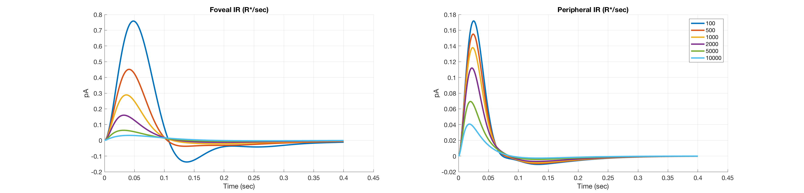

Contents
ieInit;
cMosaic = coneMosaic('os',osLinear,'pattern',[2 2 2]);
Background levels
meanIsoArray = [100 500 1000 2000 5000 10000]*cMosaic.integrationTime;
tSamples = size(cMosaic.os.linearFilters(cMosaic),1);
Loop on different background rates and plot
fovea = zeros(tSamples,length(meanIsoArray));
periphery = zeros(tSamples,length(meanIsoArray));
os = cMosaic.os;
for ii = 1:length(meanIsoArray)
cMosaic.absorptions = repmat(meanIsoArray(ii),1,3);
tmp = os.linearFilters(cMosaic,'eccentricity',true);
fovea(:,ii) = tmp(:,1);
tmp = os.linearFilters(cMosaic,'eccentricity',false);
periphery(:,ii) = tmp(:,1);
end
vcNewGraphWin([],'wide');
T = os.timeAxis;
subplot(1,2,1); hold on;
plot(T,fovea,'LineWidth',3);
grid on;
xlabel('Time (sec)','FontSize',14);
ylabel('pA','FontSize',14);
set(gca,'fontsize',14);
title(sprintf('Foveal IR (R*/sec)'));
subplot(1,2,2); hold on;
plot(T,periphery,'LineWidth',3);
grid on;
xlabel('Time (sec)','FontSize',14);
ylabel('pA','FontSize',14);
set(gca,'fontsize',14);
title(sprintf('Peripheral IR (R*/sec)'));
legend('100', '500', '1000', '2000', '5000', '10000')
